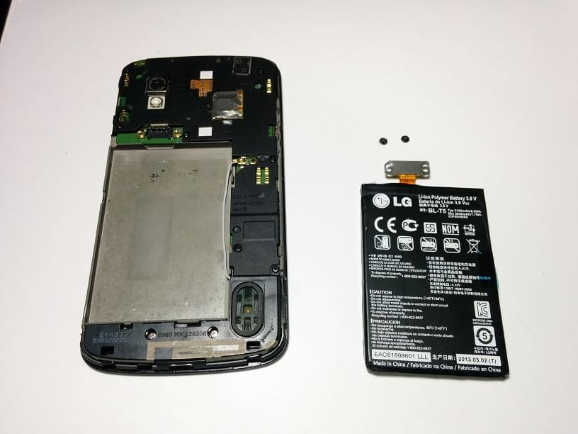
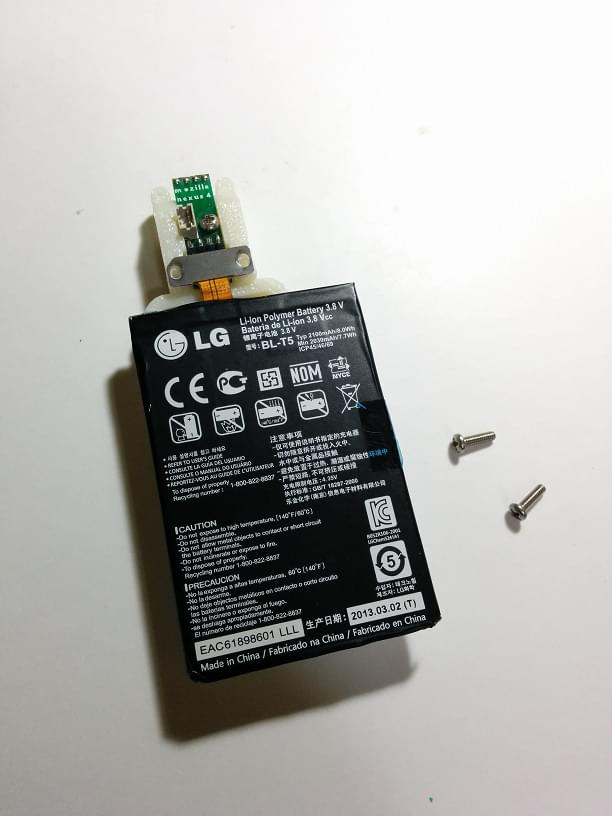
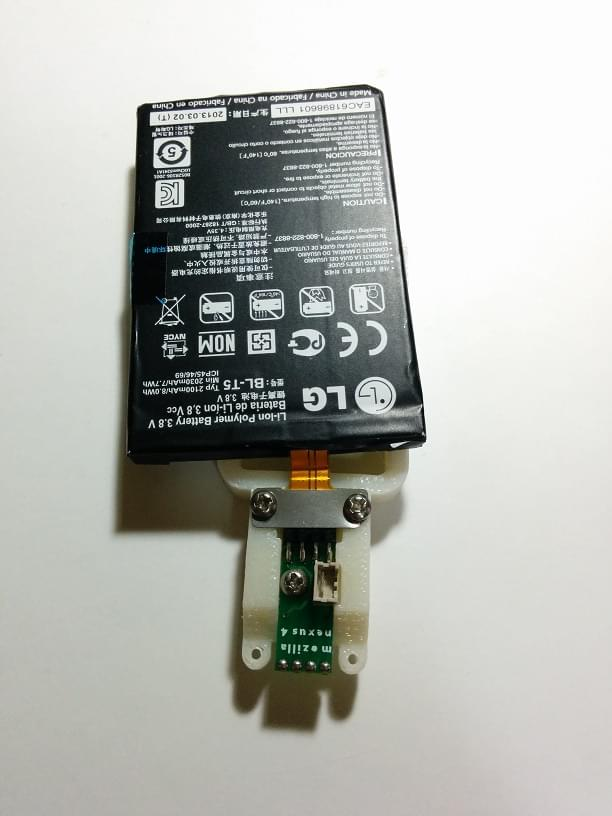
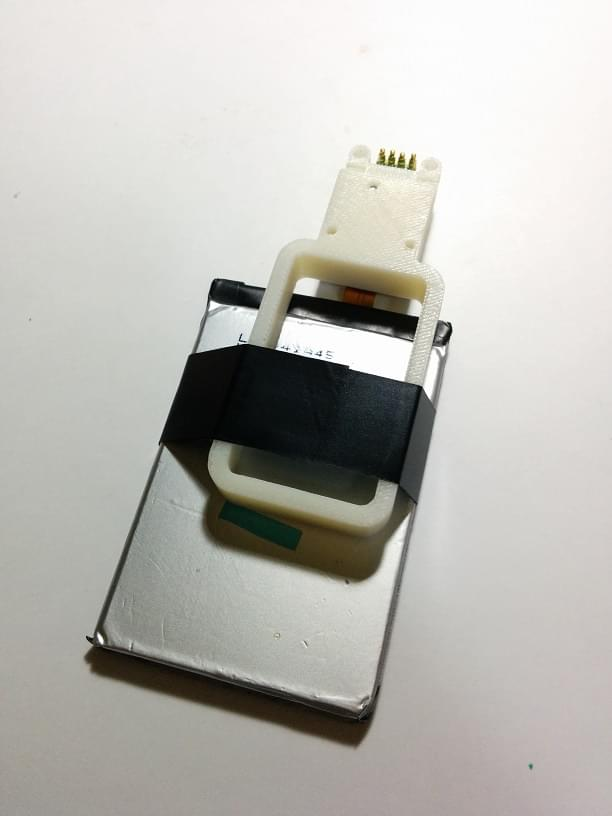
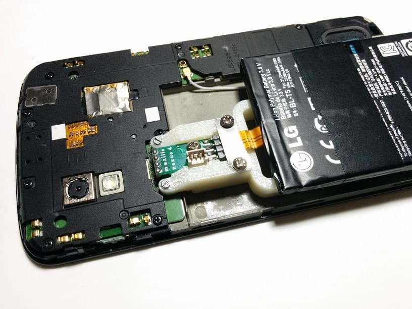
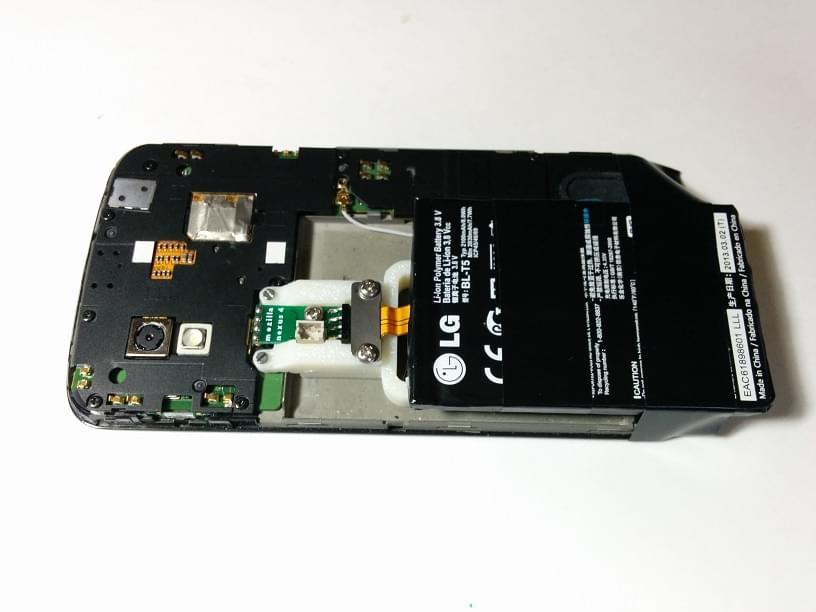

To use FxOS Powertool! for a power consumption test on the LG Nexus 4 phone, follow this guide to set up a battery harness.
The battery harness for the LG Nexus 4 phone requires special instructions to set it up.
Following is a step by step guide to installing a battery harness in a Nexus 4.
To begin with, you need to take the back off the phone, and remove the battery. There are many websites and YouTube videos that describe that process, which I won't repeat here. The first four minutes of the linked video describe the process you need to follow to get to this stage. Make sure you save the small screws in a zip-lock bag or somewhere safe, since you won't be using them with the harness.

Next, remove the harness kit and the ammeter from their bags, and make sure you don't lose the two tiny 1.4mm machine screws. You will need a small philips (star) head screwdriver, and a small slot screwdriver. You will also need some electrical tape, which you can buy at any hardware store.
The first step is to attach the battery to the battery connection header on the harness. You need to remove the two philips head machine screws from the harness. To attach the battery, you need to carefully slide the battery connector plate in place, ensuring the 4 pins on the harness connector go into the corresponding slots in the battery connector. If they go in successfully, the mounting holes on the battery connector plate should line up with the holes in the harness body. The metal battery connector plate should be flat against the white plastic harness body.

Next, replace the two screws, being careful to not over-tighten them (the threads in the harness are plastic, and can strip if too much force is applied). Basically, the screws should snug the connector against the harness.

Now you need to attach the battery to the harness, so it doesn't flap around and tear off the battery connector. For this you wrap electrical tape around the battery and the harness, as shown in the next picture:

The next step is mounting the harness on the phone. The harness mounts in the same location the original battery connector did. The plastic rounded tips at the end of the harness fit over the brass screw mounts on the phone, and the small 1.4mm machine screws provided with the harness hold it in place.

Finally, wrap another piece of electrical tape around the harness and the phone, near the bottom of the phone below the screen area. This will keep the harness securely attached to the phone. Without this final piece of tape, the harness will eventually break where it is mounted to the phone.

Congratulations! You now have a battery-harness-enabled Nexus 4, and are ready to start using the FxOS Powertool!